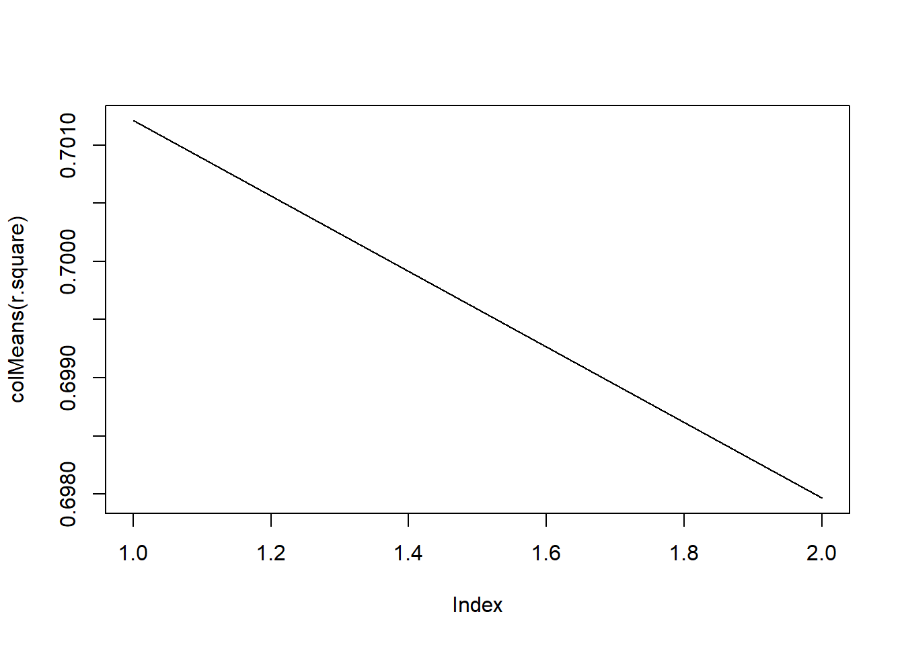

https://machinelearningmastery.com/k-fold-cross-validation/ : https://quantdev.ssri.psu.edu/tutorials/regression-statistical-learning-tool-cross-validation
K fold cross validation.
cross validation: resamppling again and again to evaluate models (especially machine learning models) K: given data is split into “k” group
More specifically, the data is split into training set Vs. test set. In other words, it is split and each spiltdata would be either exploration data or confirmation data.
library(psych)
library(tidyverse)
library(car)filepath <- "https://quantdev.ssri.psu.edu/sites/qdev/files/apexpos.csv"
dat <- read.csv(file=url(filepath),header=TRUE)
summary(dat)## id apexpos fsiq7
## Min. : 1.00 Min. : 0.000 Min. : 31.00
## 1st Qu.: 80.25 1st Qu.: 5.325 1st Qu.: 53.25
## Median :159.50 Median :10.700 Median : 76.00
## Mean :160.29 Mean :11.279 Mean : 74.65
## 3rd Qu.:240.75 3rd Qu.:16.800 3rd Qu.: 95.00
## Max. :320.00 Max. :24.900 Max. :126.00yi = beta01 + beta1xi
lm <- lm(fsiq7 ~ 1 + apexpos , data=dat, na.action=na.exclude)
summary(lm)##
## Call:
## lm(formula = fsiq7 ~ 1 + apexpos, data = dat, na.action = na.exclude)
##
## Residuals:
## Min 1Q Median 3Q Max
## -33.108 -8.790 -0.232 8.004 39.749
##
## Coefficients:
## Estimate Std. Error t value Pr(>|t|)
## (Intercept) 107.4337 1.4289 75.19 <2e-16 ***
## apexpos -2.9068 0.1079 -26.93 <2e-16 ***
## ---
## Signif. codes: 0 '***' 0.001 '**' 0.01 '*' 0.05 '.' 0.1 ' ' 1
##
## Residual standard error: 13.25 on 312 degrees of freedom
## Multiple R-squared: 0.6992, Adjusted R-squared: 0.6982
## F-statistic: 725.1 on 1 and 312 DF, p-value: < 2.2e-16yi = beta0 1 + beta1xi + beta2*xi^2 + ei
it is quadratic model.
dat$apexpos_sq <- dat$apexpos^2
lm2 <- lm(fsiq7 ~ 1 + apexpos + apexpos_sq, data=dat, na.action=na.exclude)
summary(lm2)##
## Call:
## lm(formula = fsiq7 ~ 1 + apexpos + apexpos_sq, data = dat, na.action = na.exclude)
##
## Residuals:
## Min 1Q Median 3Q Max
## -33.939 -8.731 -0.351 7.826 38.618
##
## Coefficients:
## Estimate Std. Error t value Pr(>|t|)
## (Intercept) 108.47508 2.05289 52.840 < 2e-16 ***
## apexpos -3.17979 0.40087 -7.932 3.91e-14 ***
## apexpos_sq 0.01163 0.01644 0.707 0.48
## ---
## Signif. codes: 0 '***' 0.001 '**' 0.01 '*' 0.05 '.' 0.1 ' ' 1
##
## Residual standard error: 13.26 on 311 degrees of freedom
## Multiple R-squared: 0.6997, Adjusted R-squared: 0.6977
## F-statistic: 362.2 on 2 and 311 DF, p-value: < 2.2e-16# shuffling data
dat.shuffled<-dat[sample(nrow(dat)),]
# set k
k<-10
# creat k folds-- equal size each
folds<-cut(seq(1,nrow(dat.shuffled)),breaks=k, labels =F)
folds## [1] 1 1 1 1 1 1 1 1 1 1 1 1 1 1 1 1 1 1 1 1 1 1 1 1 1
## [26] 1 1 1 1 1 1 1 2 2 2 2 2 2 2 2 2 2 2 2 2 2 2 2 2 2
## [51] 2 2 2 2 2 2 2 2 2 2 2 2 2 3 3 3 3 3 3 3 3 3 3 3 3
## [76] 3 3 3 3 3 3 3 3 3 3 3 3 3 3 3 3 3 3 3 4 4 4 4 4 4
## [101] 4 4 4 4 4 4 4 4 4 4 4 4 4 4 4 4 4 4 4 4 4 4 4 4 4
## [126] 4 5 5 5 5 5 5 5 5 5 5 5 5 5 5 5 5 5 5 5 5 5 5 5 5
## [151] 5 5 5 5 5 5 5 6 6 6 6 6 6 6 6 6 6 6 6 6 6 6 6 6 6
## [176] 6 6 6 6 6 6 6 6 6 6 6 6 6 7 7 7 7 7 7 7 7 7 7 7 7
## [201] 7 7 7 7 7 7 7 7 7 7 7 7 7 7 7 7 7 7 7 7 8 8 8 8 8
## [226] 8 8 8 8 8 8 8 8 8 8 8 8 8 8 8 8 8 8 8 8 8 8 8 8 8
## [251] 8 9 9 9 9 9 9 9 9 9 9 9 9 9 9 9 9 9 9 9 9 9 9 9 9
## [276] 9 9 9 9 9 9 9 10 10 10 10 10 10 10 10 10 10 10 10 10 10 10 10 10 10
## [301] 10 10 10 10 10 10 10 10 10 10 10 10 10 10order <- 2 # we only have two models, with one is not quadric, and one is quadric.
k<-10# nested for
for (k in 1:10){
for(i in 1:3){
print(paste("k=",k,"i=",i))
}
}## [1] "k= 1 i= 1"
## [1] "k= 1 i= 2"
## [1] "k= 1 i= 3"
## [1] "k= 2 i= 1"
## [1] "k= 2 i= 2"
## [1] "k= 2 i= 3"
## [1] "k= 3 i= 1"
## [1] "k= 3 i= 2"
## [1] "k= 3 i= 3"
## [1] "k= 4 i= 1"
## [1] "k= 4 i= 2"
## [1] "k= 4 i= 3"
## [1] "k= 5 i= 1"
## [1] "k= 5 i= 2"
## [1] "k= 5 i= 3"
## [1] "k= 6 i= 1"
## [1] "k= 6 i= 2"
## [1] "k= 6 i= 3"
## [1] "k= 7 i= 1"
## [1] "k= 7 i= 2"
## [1] "k= 7 i= 3"
## [1] "k= 8 i= 1"
## [1] "k= 8 i= 2"
## [1] "k= 8 i= 3"
## [1] "k= 9 i= 1"
## [1] "k= 9 i= 2"
## [1] "k= 9 i= 3"
## [1] "k= 10 i= 1"
## [1] "k= 10 i= 2"
## [1] "k= 10 i= 3" #which()
which(dat$id==10)## [1] 10# create an empty holder
k<-10
order<-2
r.square<- matrix(,nrow=k,ncol=order)
# k-fold validation
for (i in 1:k){
# sgmnent data by which function, and i would be 1, 2, 3, ...10
testIndexes<- which(folds==i, arr.ind=T)
testData <- dat.shuffled[testIndexes,] # this will test data set
trainData <- dat.shuffled[-testIndexes,] # except the test dataset, it will be training data set
for ( j in 1:order){
fit.train = lm(fsiq7 ~ poly(apexpos,j), data=trainData)
fit.test = predict(fit.train, newdata = testData)
r.square[i,j] = cor(fit.test, testData$fsiq7, use='complete')^2
}
}
#Averinging fit at each order
fits.kfold<-colMeans(r.square)
plot(colMeans(r.square),type='l') # l for lines 
Based on this graph, 1 is beter than 2 (quadric model)
filepath <- "https://quantdev.ssri.psu.edu/sites/qdev/files/apexpos_test.csv"
dat.test <- read.csv(file=url(filepath),header=TRUE)newdata.predict<-predict(lm, newdata=dat.test)
cor(dat.test$fsiq7, newdata.predict)^2## [1] 0.6868776